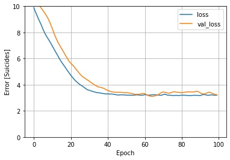
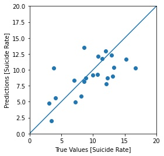
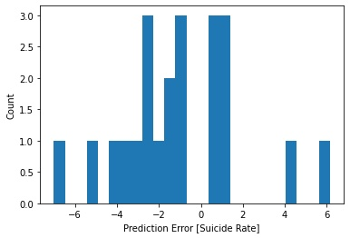
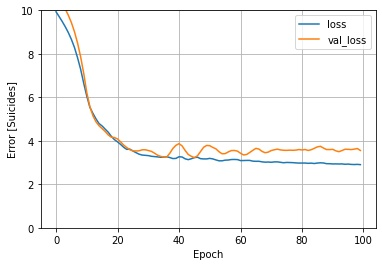
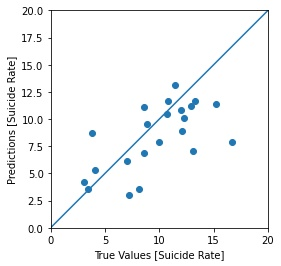
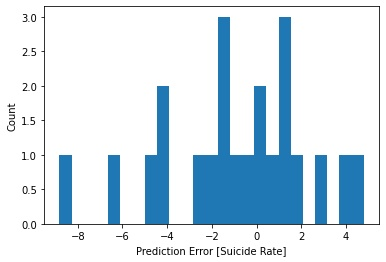

Global Suicide Rate Analysis
800,000 people die from suicide every year. That accounts for about 1.4% of total global deaths annually. The trend is heading downward in much of the developed world. In some select countries suicide is taboo and even illegal which seems a bit ridiculous. Those nations that have punishments for attempted suicides tend to be in Asia and Africa. While some do still exist in other parts of the world. Because of these negative views on suicide and attempted suicide the rates tend to be underreported as cause of death is covered up or never reported.
What are the indicators of suicide rates globally?
Dataset.
| Country | GDP per Capita | Suicides per 100k | Happiness Index Score | Human Development Index | Happiness Rank | HDI Rank | Private Debt (% of GDP) | Health Spending per Capita | Alcohol Consumption per Capita |
|---|
Introduction.
The purpose behind this project was to look at different global indexes and see if there is a correlation between these different indexes and suicide rates globally. This could show how developing nations can prioritize certain aspects of their economy and/or society in order to lower suicide rates amongst its population.
Suicide Rates: For this analysis we will be looking at the number of suicides per 100,000 people in the population.
Human Development Index (HDI): HDI attempts to create an index that looks beyond GDP for determining a countries capabilities. The Human Development Index is a summary of key dimensions in human development. Those dimensions include: life expectancy, education (number of years of education), and standard of living (GNI per Capita). HDI is measure between 0 and 1 with 1 being the highest and most developed and 0 being the least developed nations.
Happiness Index: The report is primarily based on individual respondent ratings. This provides some difficulty in gathering data and reports as this index is done entirely by survey. Rated out of 10 with 10 being the happiest life and 0 being the saddest.
GDP per Capita: GDP or Gross Domestic Product is a measure of a country's economic output. It measures the added value from the production of goods and services in a given country over a certain period of time, typically a year. Per capita means it accounts for each individual in a population.
Private Debt: Measured as a percentage of GDP and taken from the International Monetary Funds website. Described as the total stock of loans and debt securities issued by household and nonfinancial corporations as a share of GDP.
Health Spending per Capita: Measures the final consumption of health care goods and services including personal health care and collective ervices. This indicator is measured as a share of GDP, as a share of total health spending and in USD per capita.
Alcohol Consumption per Capita: Defined as the annual sales of pure alcohol in litres per person aged 15 years and older. This indicator is meased in litres per capita.
Bubble Chart.
Suicide Rates vs. Features
Bar Chart.
Data grouped by region and averaged. Bar chart shows differeneces betweent the ten major regions.
Map.
Models.
A linear regression model as well as a deep neural network model were used to predict suicide rates based off the features discussed before.
| Model | Mean Absolute Error | Mean Squared Error |
|---|
- Linear
- Linear Model Loss
- 
- Linear Model Predictions
- 
- Linear Model Error
- 
- DNN
- DNN Model Loss
- 
- DNN Model Predictions
- 
- DNN Model Error
- 
Findings.
MSE vs. MAE
Mean Squared Error: With the nature of the data and using real world data points I think that the MSE is as good as it gets. The line of best fit describes the data best. MSE is going to be influenced by the larger outlier and create a larger error coefficient. While I believe it is the best it can be I don't think that MSE is the best performance indicator for this model. I think mean absolute value is a better indicator of performance.
Mean Absolute Error: Unlike the MSE, MAE is based on the absolute value of the error and not the square. This means the error residual treats both the large and small errors equally. Because there are outliers within the dataset it is important to not over emphasize the errors. This error coefficient is a better fit for real world data where we are likely to experience some large outliers.
If I were to repeat this study again I would drill down into the more detailed data and find specific indicators that drive down the suicide rates. Things like access to healthcare, levels of education, religion, debt to income ratio, and political stability. I think these variables take a deeper dive into how a country treats each individual citizen and the desire to better everyones life within their population. It would also be noteworthy to look at the situations surrounding suicides if that data is accessable. The percentage that happen within a prison system, and how many people commited suicide with undiagnosed and medicated mental health issues. It might be far fetched to think that this kind of data is easily accessible, but I think it's valuable to look at how countries treat their citizens.
Conclusion.
Conclusion: Suicide Rates vs. X
In my findings from this project I came to the conclusion that using the six feature listed previously we can somewhat accurately predict the suicide rates of a country. Because this is a real world dataset I have allowed for my models to have a higher error coefficient than what would be used for a controlled study. With a mean absolute error around 2 I feel confident in saying the model can predict with a degree of accuracy what a countries suicide rate per 100k population could be.
The additional features added (debt, health spending, and alcohol consumption) have made the model more accurate and partnered with the original three features the model predicts with a degree of accuracy.
If I were to repeat this study again I would drill down into the more detailed data and find specific indicators that drive down the suicide rates. Things like access to healthcare, levels of education, religion, debt to income ratio, and political stability. It is difficult to find complete datasets for most of these indicators. Most under-developed and developing nations don't report the kind of data that would be most beneficial for this study. I think these variables take a deeper dive into how a country treats each individual citizen and the desire to better everyones life within their population. It would also be noteworthy to look at the situations surrounding suicides if that data is accessable. The percentage that happen within a prison system, and how many people commited suicide with undiagnosed and medicated mental health issues. It might be far fetched to think that this kind of data is easily accessible, but I think it's valuable to look at how countries treat their citizens.
Powered by Lake